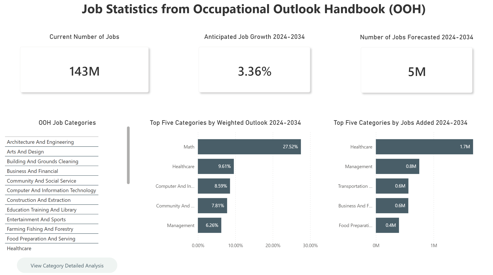
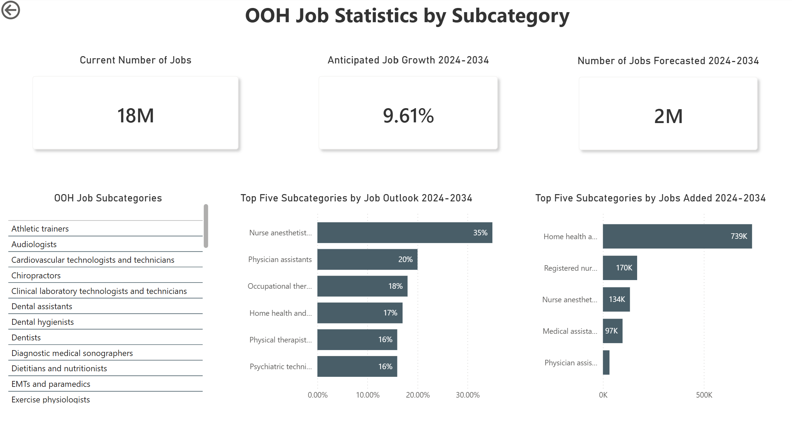
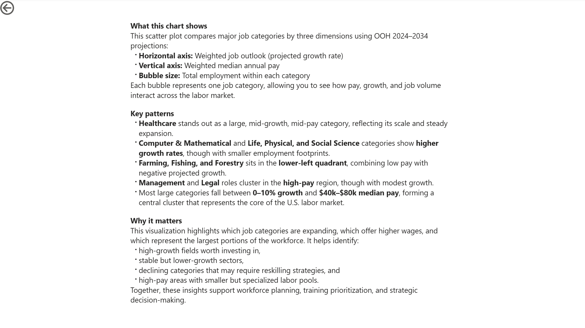

Occupational Outlook Handbook
The Occupational Outlook Handbook (OOH) lives as a massive, static collection of job profiles on the Bureau of Labor Statistics website. It’s one of the most important labor‑market repositories in the U.S., but it isn’t designed for analysis. Anyone trying to understand the current workforce landscape or its projected trajectory has to manually navigate hundreds of pages, extract scattered statistics, and piece together patterns that aren’t presented in a structured way.
In this project, I used Python and Power BI to transform the OOH into an interactive, analysis‑ready hub that HR teams can actually reason with. Instead of paging through static government content, users can explore labor‑market patterns, compare roles, and make evidence‑based workforce decisions through a structured, intuitive dashboard experience.
Python & Webscrapping
Using Python, I scraped the OOH index and filtered for the key HTML anchors that define its hidden structure. From there, I extracted the full hierarchy of categories, subcategories, and individual job pages. I then iterated through every job link to pull the core labor‑market fields—current employment, median pay, and projected growth—reconstructing the OOH into a clean, analytics‑ready dataset.
I then used Python to run a round of preliminary analysis on the reconstructed dataset—cleaning fields, normalizing formats, and applying early filters and groupings to surface meaningful patterns. This pass helped identify which labor‑market signals (growth rates, wage clusters, role distributions, etc.) should be emphasized in the final Power BI experience and which anomalies required deeper modeling before visualization.
Power BI Data Sets
Once the Python pipeline produced a clean baseline dataset, I moved into Power BI to finish the shaping work. Using Power Query, I resolved any remaining inconsistencies, standardized data types, and engineered additional calculated columns to support richer analysis—things like normalized growth bands, wage groupings, and category‑level rollups.
After the transformation layer was stable, I modeled the dataset into a proper relational structure. Each table was connected through clearly defined primary keys, allowing Power BI to reason across categories, occupations, and projections without ambiguity. The result is a semantic model that supports flexible slicing, drilling, and scenario‑based exploration.
Power BI Dashboard
With the semantic model in place, I designed the Power BI report around a clear, instructional drill‑path. The main dashboard surfaces the highest‑level view of the labor market: all OOH categories displayed in a clean, scannable layout, supported by KPIs such as total current employment, projected job growth, and the top five trends emerging across the dataset.
From there, users can drill into any category to reveal its subcategories, and then continue down to individual job roles—each level carrying forward the same analytic structure so the experience feels consistent and intuitive. The report also includes a multi‑variable scatter plot that visualizes growth, pay, and job size simultaneously, giving HR teams a quick way to identify high‑opportunity or high‑risk segments of the workforce.
The result is a layered, exploratory dashboard that turns a static government dataset into a dynamic decision‑support tool for workforce planning.



